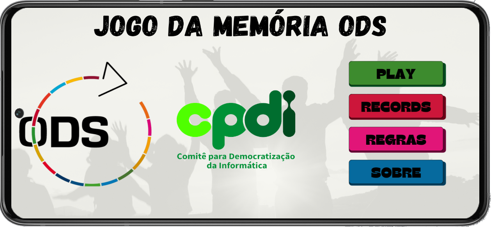
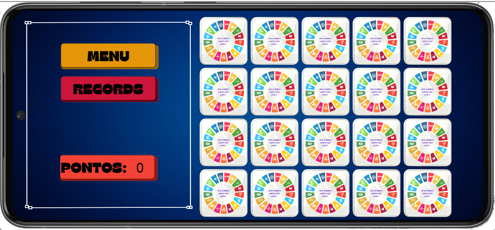

Projeto final Além de Jogar Eu Faço Jogos 2023 - CPDI
Abaixo estão detalhes sobre o projeto final desenvolvido durante o curso:
A proposta de projeto final foi a criação de um jogo com tema direcionado com as ODS - Objetivos de Desenvolvimento Sustentável.
Criamos então um Jogo da Memória, onde o objetivo é associar cada ODS com a sua descrição.


Abaixo link para o GITHUB do projeto:
Projeto Jogo da Memória ODS
Voltar para a página inicial